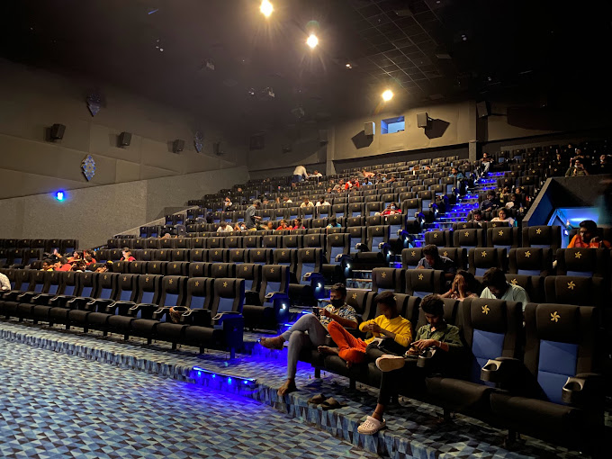

In India, EVP Cinemas is in 20 prominent states: Kerala, Chhattisgarh, Karnataka, Tamil Nadu, Andhra Pradesh, Telangana, Maharashtra,[2] Madhya Pradesh, Rajasthan, Punjab, Gujarat, Haryana, Delhi NCR, Jharkhand, Uttar Pradesh, Uttarakhand, West Bengal,[3] Assam, Bihar, Himachal Pradesh and Goa. EVP Cinemas has signed MoUs with Governments of Jharkhand and Odisha in order to set up 75 theatres-cum-recreation zones and 150 screens in the respective states. Carnival group confirmed in July 2018 that it will acquire Elan Group's 100 per cent stake in Novo Cinemas United Arab Emirates and the Kingdom of Bahrain but the deal has not been completed as of August 2019. EVP Cinemas which earlier planned to double its screen count to 1000 screens by 2020, plans to reach that by 2023.[4] EVP Cinemas operates two properties in Pune, Maharashtra owned by E-Square Leisure Private Limited.[5] EVP Cinemas, through branding collaboration with Louis Entertainment, a North-east cinemas consultant and management group had itself launched in Assam and Arunachal Pradesh.[6] EVP Cinema is a part of Carnival Group India, a well-known Business chain which is headed by Shrikant Bhasi.
